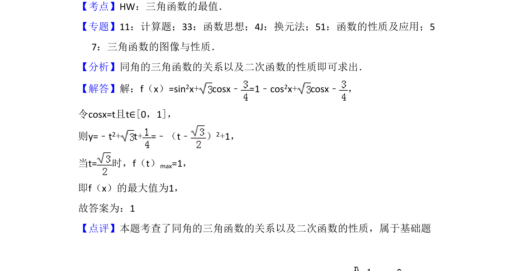

考点：三角函数的最值 同角三角函数关系 换元法 二次函数性质
三角函数的最值
同角三角函数关系
换元法
二次函数性质
考查利用同角三角函数关系转化为二次函数求最值。

📄 原 PDF 第 12 页：素材/真题/吉林/2008-2024·（吉林）数学高考真题/2017年高考数学试卷（理）（新课标Ⅱ）（解析卷）.pdf
素材/真题/吉林/2008-2024·（吉林）数学高考真题/2017年高考数学试卷（理）（新课标Ⅱ）（解析卷）.pdf